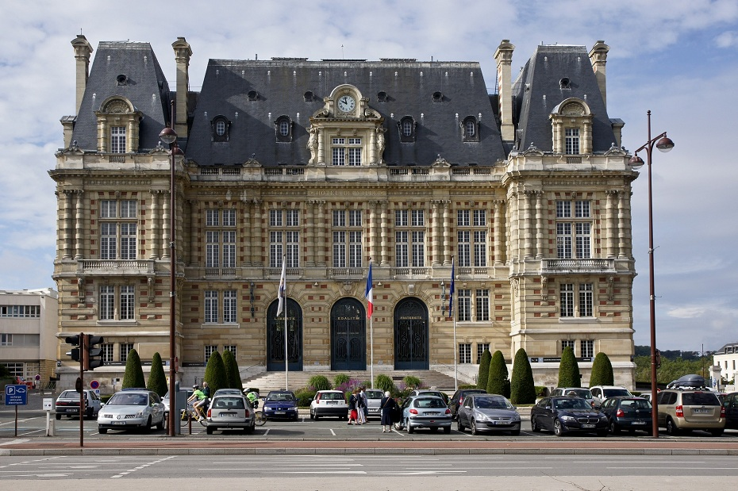
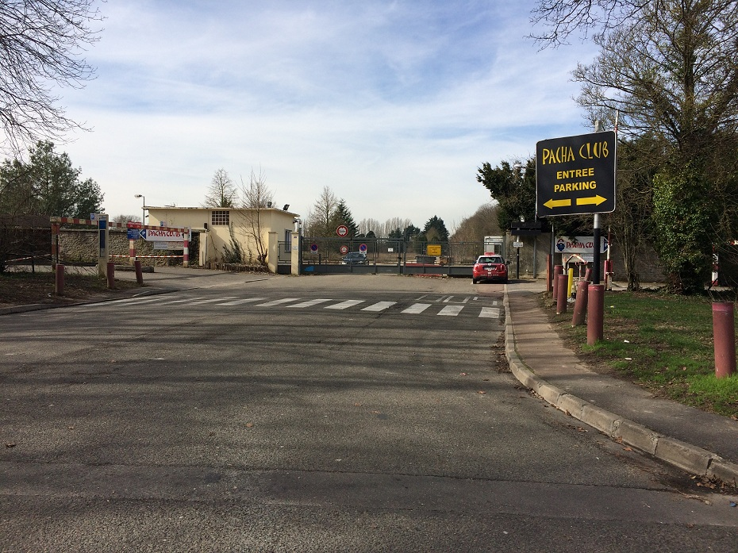

- Accueil
- •
- Nous 2
- •
- Nos témoins
- •
- Le programme
- •
- Les lieux
- •
- Se loger
- •
- Nous contacter
Les lieux

- Nom: Mairie de Versailles
- Adresse: 4, Avenue de Paris - 78000 Versailles
- Site Internet: https://www.versailles.fr/mairie/

- Nom: Eglise Notre-Dame
- Adresse: 33-35, Rue de la Paroisse - 78000 Versailles
- Site Internet: http://notredameversailles.org/

- Nom: Ferme du Genièvre
-
Adresse:
25, Rue de la Libération - Hameau de Craches
78660 Prunay-en-Yvelines - Site Internet: http://www.fermedugenievre.fr/

- Nom: Pacha Club (RDV sur le parking pour le cortège)
- Adresse: 64 Route de Versailles 78430 Louveciennes
Le trajet
Pour la famille et les témoins voici le trajet entre la mairie et l'église.
Le parking de la mairie se trouve à coté de la gare rive gauche (les places face à la mairie sont rares).
Après la cérémonie civile, vous pourrez vous rendre à l'église :
- en voiture (5 minutes)
- à pied (15 minutes)
- en bus (5 minutes) : ligne B arrêt Préfecture vers Notre-Dame direction Roquencourt
Pour le cortège voici le trajet entre le Pacha Club et le lieu de réception :